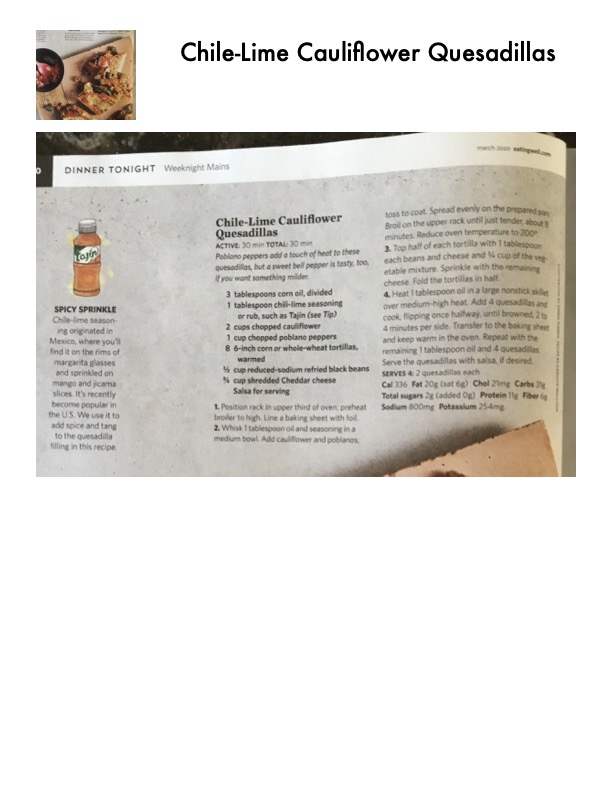

Chile-Lime Cauliflower Quesadillas

Original cookbook page 57
Poblano pepper adds a touch of heat to these quesadillas, but we love the classic. Try it both ways and see what your family likes!
Prep: 30 minutes • Total: 30 minutes
Ingredients
- 3 tablespoons corn oil, divided
- 2 tablespoons chile-lime seasoning or rub, such as Tajín (see Tip)
- 2 cups chopped cauliflower
- 1 cup chopped poblano pepper
- 6-inch corn or whole-wheat tortillas, warmed
- 1/2 cup reduced-sodium refried black beans
- 3/4 cup shredded Cheddar cheese
- Lime wedges for serving
Instructions
- Position rack in upper third of oven; preheat broiler to high. Line a baking sheet with foil.
- Whisk 1 tablespoon oil and seasoning in a medium bowl. Add cauliflower and poblano; toss to coat. Spread evenly on the prepared pan. Broil, stirring once, for 10 minutes or until just tender and starting to brown. Reduce oven temperature to 200°F. Put half of each tortilla with 1 tablespoon each beans and cheese and 1/4 cup of the vegetable mixture. Sprinkle with the remaining cheese. Fold the tortillas over and brush both sides with the remaining oil in a large nonstick skillet over medium heat. Add the quesadillas and cook, flipping once halfway until browned, 3 to 5 minutes per side. Transfer to the baking sheet and keep warm in the oven. Repeat with the remaining 3 tablespoons oil and 4 quesadillas. Cut each into wedges and serve with lime.
Recipe #57 from collection